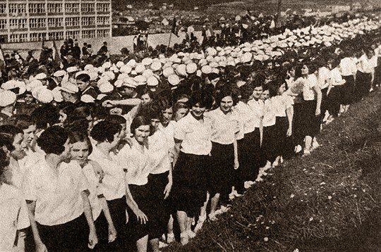
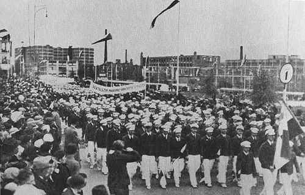
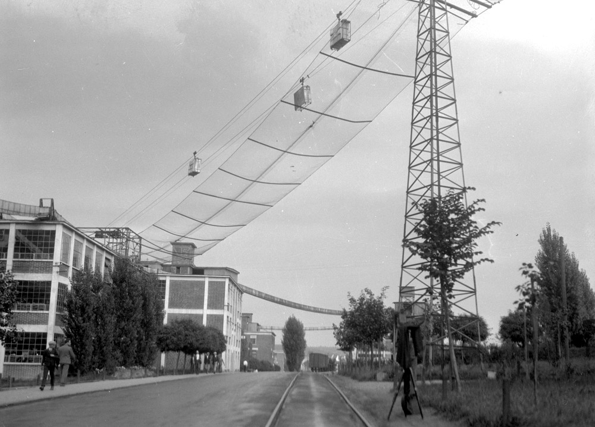
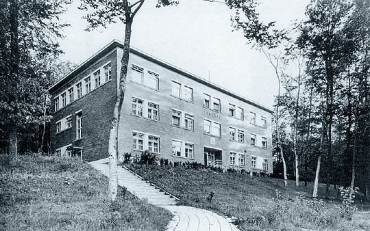
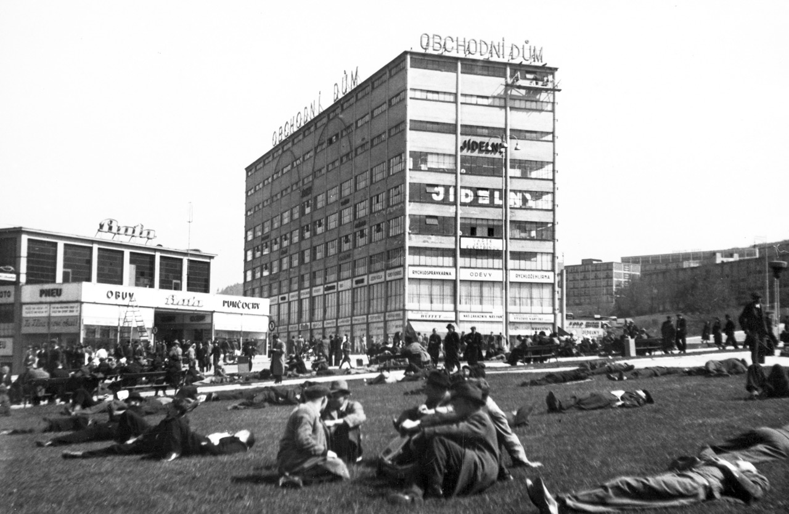
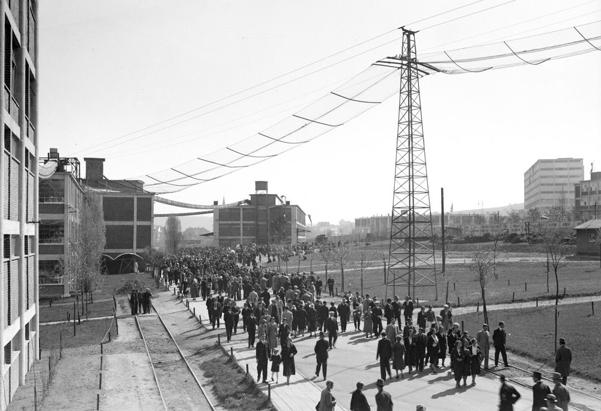
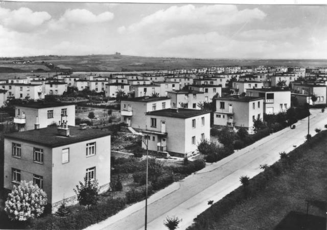

Representanti národů procházející výcvikem Baťovy školy práce ve Zlíně se svými vlajkami před budovou školy.

Každoroční sportovní slavnost zlínské průmyslové mládeže, žáků a žaček Baťovy školy práce.

Oslavy prvního máje (zde rok 1935), mladí muži.

Lanová dráha zaručující nerušenou dopravu materiálu do konfekčních dílen v roce 1933

Internát mladých mužů - Tomášovců. Po válce a zapuzení principů BŠP sloužila budova až do devadesátých let jako nemocniční zařízení Svit pro závažné kardiologické případy.

Náměstí Práce během polední přestávky kde studenti a pracovníci odpočívali
V BAŤOVĚ ŠKOLE PRÁCE vychovávali i mladé ženy, v roce 1933 se zde učilo na 600 děvčat. Na snímku pohled do šicí dílny, kde pracují uniformované mladé ženy Baťovy školy práce.

Tovární areál během prvomájových oslav v roce 1932

V počátcích rozvoje firmy ve Zlíně zkoušel Tomáš Baťa stavět čtyřdomky s valbovou střechou. Později však přešel k jednoduchému typu stavby z červených cihel s betonovou podezdívkou.